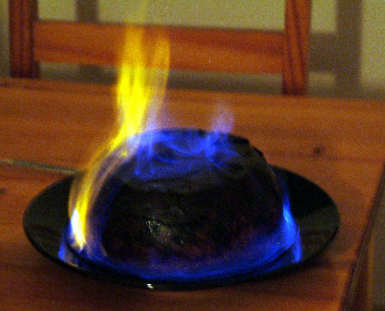

Ingredients1 table spoon margarine 120g oats 120g cornflour 1 apple 1 banana 100g almonds (ground or pieces) 130g currants 100g cherries 160g sugar 1tsp nutmeg 1tsp cinamon 1tsp salt juice and rind of one lemon 200ml alchohol (i.e. sherry + whiskey) 2 beaten eggs |
 |